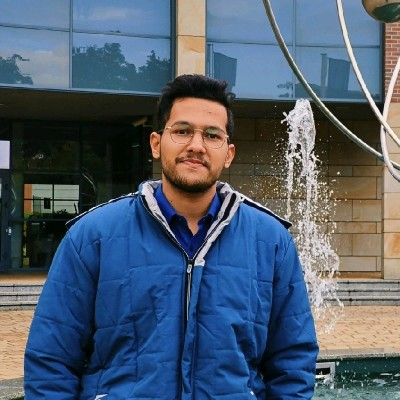

<!DOCTYPE html>
<html lang="en">
<head>
<meta charset="UTF-8">
<meta name="viewport" content="width=device-width, initial-scale=1.0">
<title>Satyam Tiwari — PhD Researcher, PET Imaging</title>
<meta name="description" content="Satyam Tiwari, PhD student in Biophysics at Jagiellonian University. CT-less attenuation correction for total-body J-PET using detector-scattered photons.">
<link rel="preconnect" href="https://fonts.googleapis.com">
<link href="https://fonts.googleapis.com/css2?family=Inter:wght@400;500;600;700&family=JetBrains+Mono:wght@400;500&display=swap" rel="stylesheet">
<style>
:root{
  --bg:#0b0d12;--bg2:#11141b;--card:#151922;--line:#232836;
  --text:#e6e8ee;--muted:#8b93a7;--accent:#6ee7c8;--accent2:#7aa2ff;
}
*{box-sizing:border-box;margin:0;padding:0}
html{scroll-behavior:smooth}
body{font-family:Inter,system-ui,sans-serif;background:var(--bg);color:var(--text);line-height:1.65;-webkit-font-smoothing:antialiased}
a{color:inherit;text-decoration:none}
.wrap{max-width:960px;margin:0 auto;padding:0 24px}
.mono{font-family:'JetBrains Mono',monospace}

/* nav */
nav{position:sticky;top:0;z-index:10;backdrop-filter:blur(12px);background:rgba(11,13,18,.75);border-bottom:1px solid var(--line)}
nav .wrap{display:flex;justify-content:space-between;align-items:center;height:60px}
nav .logo{font-weight:700;letter-spacing:-.02em}
nav .logo span{color:var(--accent)}
nav ul{display:flex;gap:24px;list-style:none;font-size:.9rem;color:var(--muted)}
nav ul a:hover{color:var(--text)}
@media(max-width:640px){nav ul{display:none}}

/* hero */
.hero{padding:110px 0 80px;position:relative;overflow:hidden}
.hero::before{content:"";position:absolute;width:520px;height:520px;right:-140px;top:-80px;
  background:radial-gradient(circle,rgba(110,231,200,.18),transparent 65%);pointer-events:none}
.avatar{width:96px;height:96px;border-radius:50%;object-fit:cover;border:2px solid var(--accent);margin-bottom:20px;display:block}
.ring{position:absolute;right:40px;top:90px;width:260px;height:260px;border:1px dashed rgba(122,162,255,.35);border-radius:50%;animation:spin 60s linear infinite}
.ring::after{content:"";position:absolute;width:10px;height:10px;background:var(--accent);border-radius:50%;top:-5px;left:50%;box-shadow:0 0 18px var(--accent)}
@keyframes spin{to{transform:rotate(360deg)}}
@media(max-width:800px){.ring{display:none}}
.tag{display:inline-block;font-size:.8rem;color:var(--accent);border:1px solid rgba(110,231,200,.35);padding:4px 12px;border-radius:99px;margin-bottom:22px}
h1{font-size:clamp(2.4rem,6vw,3.8rem);line-height:1.1;letter-spacing:-.035em;font-weight:700}
h1 .grad{background:linear-gradient(90deg,var(--accent),var(--accent2));-webkit-background-clip:text;background-clip:text;color:transparent}
.hero p{max-width:600px;color:var(--muted);font-size:1.1rem;margin-top:20px}
.btns{display:flex;gap:12px;margin-top:32px;flex-wrap:wrap}
.btn{padding:11px 20px;border-radius:10px;font-weight:500;font-size:.95rem;border:1px solid var(--line);transition:.2s}
.btn.primary{background:var(--accent);color:#06251d;border-color:var(--accent)}
.btn:hover{transform:translateY(-2px);border-color:var(--accent)}

/* sections */
section{padding:70px 0;border-top:1px solid var(--line)}
.label{font-size:.8rem;color:var(--accent);margin-bottom:10px}
h2{font-size:1.9rem;letter-spacing:-.02em;margin-bottom:28px}
.grid{display:grid;grid-template-columns:repeat(auto-fit,minmax(260px,1fr));gap:16px}
.card{background:var(--card);border:1px solid var(--line);border-radius:14px;padding:22px;transition:.2s}
.card:hover{border-color:#34405a;transform:translateY(-3px)}
.card h3{font-size:1.05rem;margin-bottom:8px}
.card p{color:var(--muted);font-size:.93rem}
.stat{font-size:2rem;font-weight:700;color:var(--accent)}

/* timeline */
.item{display:grid;grid-template-columns:120px 1fr;gap:20px;padding:18px 0;border-bottom:1px solid var(--line)}
.item:last-child{border-bottom:none}
.item .when{color:var(--muted);font-size:.85rem;padding-top:3px}
.item h3{font-size:1rem;font-weight:600}
.item .where{color:var(--muted);font-size:.9rem}
.pill{display:inline-block;font-size:.72rem;padding:2px 9px;border-radius:99px;margin-left:8px;vertical-align:middle;background:rgba(122,162,255,.14);color:var(--accent2)}
.pill.talk{background:rgba(110,231,200,.14);color:var(--accent)}
@media(max-width:560px){.item{grid-template-columns:1fr;gap:4px}}

.pub{background:var(--card);border:1px solid var(--line);border-left:3px solid var(--accent);border-radius:12px;padding:22px}
.pub .authors{color:var(--muted);font-size:.9rem;margin:6px 0}
.pub .authors b{color:var(--text)}
.pub a{color:var(--accent2);font-size:.9rem}

.skills{display:flex;flex-wrap:wrap;gap:8px;margin-top:8px}
.skills span{font-size:.82rem;padding:6px 12px;border:1px solid var(--line);border-radius:8px;color:var(--muted)}

footer{padding:50px 0;border-top:1px solid var(--line);color:var(--muted);font-size:.9rem}
footer .links{display:flex;gap:20px;flex-wrap:wrap;margin-bottom:14px}
footer a:hover{color:var(--accent)}
.pub-list{list-style:none;display:flex;flex-direction:column;gap:12px;margin-top:18px}
.pub-list li{background:var(--card);border:1px solid var(--line);border-radius:12px;padding:16px 18px;font-size:.93rem}
.pub-list .j{color:var(--muted);font-size:.85rem}
.pub-list a{color:var(--accent2);font-size:.82rem}
h3.sub{font-size:1rem;color:var(--muted);font-weight:500;m<header class="hero"><div class="wrap">
  <div class="ring"></div>
  
  <span class="tag mono">PhD Researcher · Biophysics · Jagiellonian University</span>
  <h1>Satyam Tiwari<br><span class="grad">CT-less PET imaging.</span></h1>
  <p>I turn photons that PET scanners usually discard into signal. In the J-PET group I develop Detector-Scattered Attenuation Correction (DSAC): attenuation maps from detector-scattered coincidences, with no CT scan, for low-cost plastic-scintillator total-body PET.</p>
  <div class="btns">
    <a class="btn primary" href="#publications">Publications</a>
    <a class="btn" href="cv.pdf">Download CV</a>
    <a class="btn" href="mailto:satyam.tiwari@doctoral.uj.edu.pl">Get in touch</a>
  </div>
</div></header>

<section id="research"><div class="wrap">
  <div class="label mono">// research</div>
  <h2>What I work on</h2>
  <div class="grid">
    <div class="card"><h3>CT-less PET</h3><p>Quantitative attenuation correction from detector-scattered and annihilation data in plastic-scintillator PET.</p></div>
    <div class="card"><h3>Total-body reconstruction</h3><p>Simulation-driven methods (GATE / Monte Carlo) for attenuation-map estimation and better lesion localisation.</p></div>
    <div class="card"><h3>AI for medical imaging</h3><p>Deep-learning denoising and enhancement of attenuation maps for robust CT-less workflows.</p></div>
  </div>
  <div class="grid" style="margin-top:16px">
    <div class="card"><div class="stat">15</div><p>publications &amp; preprints</p></div>
    <div class="card"><div class="stat">9</div><p>conference talks &amp; posters</p></div>
    <div class="card"><div class="stat">🏆</div><p>Presentation Award, Total-Body PET 2026 (UC Davis)</p></div>
  </div>
  <p style="color:var(--muted);margin-top:20px;font-size:.92rem">Supervisors: Prof. Paweł Moskal &amp; Dr. Sushil K. Sharma · Team member, MAESTRO grant project</p>
</div></section>

<section id="publications"><div class="wrap">
  <div class="label mono">// publications</div>
  <h2>Publications</h2>
  <div class="pub">
    <span class="pill talk" style="margin:0 0 10px">First author</span>
    <h3>Feasibility Study of Using Detector-Scattered Photons for Attenuation Correction in CT-less PET Imaging</h3>
    <div class="authors"><b>S. Tiwari</b>, S. K. Sharma, P. Moskal · <i>Bio-Algorithms and Med-Systems</i>, 2025</div>
    <a href="https://doi.org/10.5604/01.3001.0055.4655">doi:10.5604/01.3001.0055.4655 →</a>
  </div>
  <h3 class="sub">Co-authored (J-PET Collaboration)</h3>
  <ul class="pub-list">
<li>First-in-human quantum entanglement imaging<div class="j">P. Moskal et al. (incl. <b>S. Tiwari</b>) · <i>arXiv, Jun 2026</i></div><a href="https://arxiv.org/abs/2606.29421">arxiv.org/abs/2606.29421 →</a></li>
<li>First direct determination of the pick-off contribution to the ortho-positronium decay rate<div class="j">S. K. Sharma et al. (incl. <b>S. Tiwari</b>) · <i>Physics Letters B 879, 140610 (2026)</i></div><a href="https://doi.org/10.1016/j.physletb.2026.140610">doi.org/10.1016/j.physletb.2026.140610 →</a></li>
<li>Monte Carlo-based scatter correction for the plastic-based modular PET scanner J-PET<div class="j">R. Bayerlein et al. (incl. <b>S. Tiwari</b>) · <i>Physics in Medicine &amp; Biology 71(7) (2026)</i></div><a href="https://doi.org/10.1088/1361-6560/ae54fb">doi.org/10.1088/1361-6560/ae54fb →</a></li>
<li>First positronium lifetime imaging using <sup>52</sup>Mn and <sup>55</sup>Co with a plastic-scintillator-based PET scanner<div class="j">M. Das et al. (incl. <b>S. Tiwari</b>) · <i>Scientific Reports (2026)</i></div><a href="https://doi.org/10.1038/s41598-026-43965-z">doi.org/10.1038/s41598-026-43965-z →</a></li>
<li>First ex-vivo positronium imaging of tissues with modular J-PET scanner using <sup>44</sup>Sc<div class="j">K. Kubat et al. (incl. <b>S. Tiwari</b>) · <i>Z. Med. Phys. (2026)</i></div><a href="https://doi.org/10.1016/j.zemedi.2026.03.004">doi.org/10.1016/j.zemedi.2026.03.004 →</a></li>
<li>Studies of CPT symmetry in positronium decay with the 192 plastic strip J-PET detector<div class="j">N. Chug et al. (incl. <b>S. Tiwari</b>) · <i>Physical Review D (2026)</i></div><a href="https://doi.org/10.1103/wy7r-xgl9">doi.org/10.1103/wy7r-xgl9 →</a></li>
<li>Feasibility study of positronium lifetime imaging with the Biograph Vision Quadra and J-PET tomographs<div class="j">S. Parzych et al. (incl. <b>S. Tiwari</b>) · <i>arXiv, Jan 2026</i></div><a href="https://doi.org/10.48550/arXiv.2601.03172">doi.org/10.48550/arXiv.2601.03172 →</a></li>
<li>Methodology for calibrating modular J-PET scanner with prompt gamma emitters <sup>22</sup>Na and <sup>44</sup>Sc<div class="j">K. Kacprzak et al. (incl. <b>S. Tiwari</b>) · <i>Bio-Algorithms and Med-Systems (2025)</i></div><a href="https://doi.org/10.5604/01.3001.0055.5408">doi.org/10.5604/01.3001.0055.5408 →</a></li>
<li>First experimental demonstration of positronium lifetime imaging with <sup>44</sup>Sc using the J-PET scanner<div class="j">M. Das et al. (incl. <b>S. Tiwari</b>) · <i>IEEE NSS/MIC/RTSD (2025)</i></div><a href="https://doi.org/10.1109/NSS/MIC/RTSD57106.2025.11286751">doi.org/10.1109/NSS/MIC/RTSD57106.2025.11286751 →</a></li>
<li>Simulation studies of a brain PET insert for the Total Body J-PET tomograph<div class="j">M. Rädler et al. (incl. <b>S. Tiwari</b>) · <i>IEEE NSS/MIC/RTSD (2025)</i></div><a href="https://doi.org/10.1109/NSS/MIC/RTSD57106.2025.11286628">doi.org/10.1109/NSS/MIC/RTSD57106.2025.11286628 →</a></li>
<li>Development of a cost-effective Total Body J-PET from plastic scintillators: definitive design<div class="j">K. Tayefi Ardebili et al. (incl. <b>S. Tiwari</b>) · <i>IEEE NSS/MIC/RTSD (2025)</i></div><a href="https://doi.org/10.1109/NSS/MIC/RTSD57106.2025.11287221">doi.org/10.1109/NSS/MIC/RTSD57106.2025.11287221 →</a></li>
<li>Monte Carlo-based scatter correction for J-PET<div class="j">R. Bayerlein et al. (incl. <b>S. Tiwari</b>) · <i>IEEE NSS/MIC/RTSD (2025)</i></div><a href="https://doi.org/10.1109/NSS/MIC/RTSD57106.2025.11287184">doi.org/10.1109/NSS/MIC/RTSD57106.2025.11287184 →</a></li>
<li>µPPET: Investigating the muon puzzle with J-PET detectors<div class="j">A. Porcelli et al. (incl. <b>S. Tiwari</b>) · <i>Universe (2025)</i></div><a href="https://doi.org/10.3390/universe11060180">doi.org/10.3390/universe11060180 →</a></li>
<li>First positronium imaging using <sup>44</sup>Sc with the J-PET scanner: a case study on the NEMA image quality phantom<div class="j">M. Das et al. (incl. <b>S. Tiwari</b>) · <i>IEEE TRPMS (2025)</i></div><a href="https://doi.org/10.1109/TRPMS.2025.3621554">doi.org/10.1109/TRPMS.2025.3621554 →</a></li>
  </ul>
</div></section>

<section id="talks"><div class="wrap">
  <div class="label mono">// talks &amp; posters</div>
  <h2>Conferences</h2>
<div class="item"><div class="when mono">Nov 2026</div><div><h3>CT-less J-PET with the full detector-scatter framework (incl. MLTR) · DSAC in LYSO vs plastic scintillators <span class="pill talk">Presented</span></h3><div class="where">IEEE NSS/MIC/RTSD 2026 · Granada, Spain</div></div></div>
<div class="item"><div class="when mono">Sep 2026</div><div><h3>CT-Less Attenuation Correction Using Detector-Scattered Photons in Plastic Scintillator-Based Total-Body PET: A Monte Carlo Study <span class="pill talk">Presented</span> <span class="pill">🏆 Presentation Award</span></h3><div class="where">Total-Body PET 2026 · UC Davis, USA</div></div></div>
<div class="item"><div class="when mono">Jul 2026</div><div><h3>Analytical Modelling of Blank Scan in DSAC <span class="pill talk">Talk</span></h3><div class="where">6th Jagiellonian Symposium (core organizer) · Kraków</div></div></div>
<div class="item"><div class="when mono">May 2026</div><div><h3>Deep-learning enhancement of detector-scatter attenuation maps for CT-less plastic-scintillator PET <span class="pill talk">Talk</span></h3><div class="where">MCSB 2026 · Kraków</div></div></div>
<div class="item"><div class="when mono">May 2026</div><div><h3>DSAC: A Novel CT-less Attenuation Correction Approach for Cost-Effective Plastic Scintillator based Total-body PET <span class="pill talk">Talk</span></h3><div class="where">FTMI-TBPET-PSMR 2026 · Valencia, Spain</div></div></div>
<div class="item"><div class="when mono">Mar 2026</div><div><h3>DS-MLAA for 2D CT-less attenuation correction in PET <span class="pill ">Poster</span></h3><div class="where">EMIM 2026 · Slovenia</div></div></div>
<div class="item"><div class="when mono">Jan 2026</div><div><h3>Detector-scattered coincidences for quantitative attenuation estimation <span class="pill talk">Talk</span></h3><div class="where">2nd Total-Body J-PET General Meeting (core organizer) · Kraków</div></div></div>
<div class="item"><div class="when mono">Sep 2025</div><div><h3>Detector-scattered photons for attenuation map generation in J-PET <span class="pill ">Poster</span></h3><div class="where">2nd Symposium on New Trends in Nuclear &amp; Medical Physics (organizer) · UJ &amp; AGH, Kraków</div></div></div>
<div class="item"><div class="when mono">Oct 2024</div><div><h3>PhD project plan: CT-less PET with J-PET <span class="pill talk">Talk</span></h3><div class="where">1st Total-Body J-PET General Meeting · Kraków</div></div></div>
  <h3 class="sub">Schools</h3>
  <div class="item"><div class="when mono">Jul 2025</div><div><h3>AI in Medical Imaging Summer School</h3><div class="where">Radboud University, Netherlands</div></div></div>
  <div class="item"><div class="when mono">Mar 2024</div><div><h3>SymPhy 2024</h3><div class="where">IIT Bombay</div></div></div>
</div></section>

<section id="background" class="edu"><div class="wrap">
  <div class="label mono">// background</div>
  <h2>Education &amp; awards</h2>
  <div class="item"><div class="when mono">2024–2028</div><div><h3>PhD, Biophysics <span>· Jagiellonian University</span></h3><div class="where">J-PET Research Group, Kraków</div></div></div>
  <div class="item"><div class="when mono">2022–2024</div><div><h3>MSc, Physics <span>· IIT Bombay</span></h3><div class="where">Thesis: using scattered data in PET imaging (Prof. Pragya Das)</div></div></div>
  <div class="item"><div class="when mono">2019–2022</div><div><h3>BSc (Hons.), Physics <span>· University of Delhi</span></h3><div class="where">Kirori Mal College · CPI 9.42/10</div></div></div>
  <h3 class="sub">Grants &amp; honours</h3>
  <div class="skills">
    <span>🏆 TBPET 2026 Presentation Award</span><span>TBPET 2026 Travel Grant</span><span>NAWA STER Mobility Grant (2026)</span><span>TD-UJ Grant ×4 (2024–2026)</span><span>ID UJ Visibility &amp; Mobility Grant 2026</span><span>NAWA PROM Grant 2025</span><span>MAESTRO Project Team</span><span>NGPE National Topper, Top 1% (2022)</span><span>IIT JAM Physics AIR 15</span>
  </div>
</div></section>

<section id="projects"><div class="wrap">
  <div class="label mono">// code</div>
  <h2>Projects</h2>
  <div class="grid">
    <a class="card" href="https://github.com/Official-Satyam-Tiwari/System-Matrix-Generation-for-PET-Imaging"><h3>PET System Matrix ↗</h3><p>System matrix generation for PET and tomographic reconstruction.</p></a>
    <a class="card" href="https://github.com/Official-Satyam-Tiwari/ROOT-Viewer"><h3>ROOT-Viewer ↗</h3><p>Quick visualisation tool for ROOT files.</p></a>
    <a class="card" href="https://github.com/Official-Satyam-Tiwari/Reference-Architect"><h3>Reference-Architect ↗</h3><p>Reference lookup via Crossref, OpenAlex and PubMed APIs.</p></a>
    <div class="card"><h3>3D TOF scatter model</h3><p>IIT Bombay: estimating annihilation points from scattered data for sharper 3D reconstruction.</p></div>
  </div>
  <div class="skills">
    <span>Python</span><span>C++</span><span>GATE / Geant4</span><span>ROOT</span><span>TensorFlow</span><span>scikit-learn</span><span>Monte Carlo</span><span>SQL</span>
  </div>
</div></section>

<section id="contact"><div class="wrap">
  <div class="label mono">// contact</div>
  <h2>Let's collaborate</h2>
  <p style="color:var(--muted);max-width:560px">Open to collaborations on CT-less PET, attenuation correction and total-body imaging. J-PET group, Jagiellonian University, Kraków.</p>
</div></section>

<footer><div class="wrap">
  <div class="links mono">
    <a href="mailto:satyam.tiwari@doctoral.uj.edu.pl">Email</a>
    <a href="https://orcid.org/0009-0006-2293-3946">ORCID</a>
    <a href="https://koza.if.uj.edu.pl/staff/stiwari">J-PET profile</a>
    <a href="https://github.com/Official-Satyam-Tiwari">GitHub</a>
    <a href="https://linkedin.com/in/satyam-tiwari-204a3a174">LinkedIn</a>
    <a href="https://x.com/SatyamTiwariJi">X</a>
  </div>
  © 2026 Satyam Tiwari · J-PET Collaboration
</div></footer>

s mono">
    <a href="mailto:satyam.tiwari@doctoral.uj.edu.pl">Email</a>
    <a href="https://github.com/Official-Satyam-Tiwari">GitHub</a>
    <a href="https://linkedin.com/in/satyam-tiwari-204a3a174">LinkedIn</a>
    <a href="https://x.com/SatyamTiwariJi">X</a>
    <a href="https://orcid.org/">ORCID</a>
    <a href="https://scholar.google.com/">Google Scholar</a>
  </div>
  © 2026 Satyam Tiwari · J-PET Collaboration
</div></footer>

</body>
</html>
